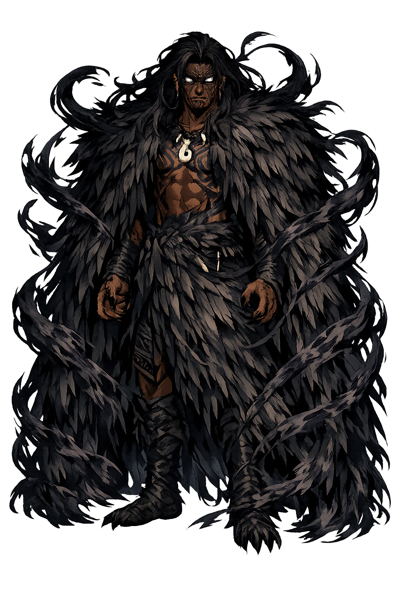

Stories of Whiro
Whiro's mythology is an antagonist's dossier — he exists in the Māori corpus chiefly as the power Tāne and the tohunga must overcome. The sources are nineteenth-century records of oral tradition (Grey 1855; White 1887–90; Best 1925), and they agree on his office while differing on his genealogy and extent.
In the great myth preserved by George Grey (Polynesian Mythology, 1855; Nga Mahi a nga Tupuna), Tāne ascends through the layered heavens to obtain the three baskets of knowledge (ngā kete o te wānanga) for humankind. Whiro — Whiro-te-tipua — marshals the powers of darkness against the ascent, and the myth is explicitly a war: each heaven is contested, and Tāne prevails only with the aid of the winds and ancestor-gods above. Grey's text, dictated by Māori experts in the 1850s, is our fullest witness; the Tūhoe versions add that the battle-lines were drawn anew in each heaven as Tāne climbed. The variant accounts collected by Elsdon BestThe variant accounts collected by Elsdon Best (Tūhoe, 1925) and John White (Ancient History of the Maori) fill in different battle-lines. Whatever the version, the structure is fixed: knowledge descends only through victory over darkness, and darkness is a person who resents the delivery.
Māori eschatology sends the dead (ngā mate) to the underworld of Rarohenga, in the keeping of the goddess Hine-nui-te-pō. Within that realm the sources assign Whiro a dreadful office: Best (Tūhoe, 1925) records that Whiro consumes the dead — the final extinction that awaits those who pass fully into his night — while other authorities make the underworld a guarded, not devoured, existence. Best records how carefully the dying were guarded: kin kept vigil so the soul's journey began rightly, for a misstep on the path meant falling among the powers that answered to Whiro rather than to the ancestors. The disagreement is itself instructive:The disagreement is itself instructive: Māori tradition was not systematic about its dark gods. What holds across the accounts is the direction of dread: after death lies a jurisdiction Whiro administers, and his administration is nothing to hope for.
Whiro's epithet 'the lizard of death' is not metaphor alone: Māori genealogical chant makes him ancestor of the ngarara — the lizards, tuatara, and reptiles — whose cold eye and sudden movement marked them as his embodied kin (Best, Tūhoe; Orbell, A Concise Encyclopedia of Māori Myth and Legend, 1998). A lizard in the house could be an omen or an emissary; killing one carelessly was dangerous. The tuatara — a living fossil, stranger than any creature the Māori had names for — was the most charged of all his children, and some traditions set it as guardian at the very threshold of Hine-nui-te-pō. The genealogy does ecological work:The genealogy does ecological work: it assigns the island's most alien-seeming creatures to the one god who is himself alien to the world of light. The reptiles are Whiro's diaspora — small darknesses walking in the daylight world.
In Māori medical tradition, sickness (mate) was the work of hostile atua, and Whiro stood behind the host: Best's ethnography (Tūhoe; 'Maori Medical Lore') describes the tohunga diagnosing which atua had 'shot' the patient and performing rites to drive the invader out. The rite was theater as much as medicine: the tohunga named the invading atua aloud, drove it toward the sea with the village's shouting, and bound the patient with cords — law, drama, and therapy in one operation. The afflictions attributed to Whiro's sideThe afflictions attributed to Whiro's side of the spirit world were grave and creeping — the wasting illnesses, the illnesses that came at night. The practical corollary was a therapy of confrontation: healing was a battle with Whiro's agents, fought with chant, gesture, and the authority of ancestors who had beaten him before. Illness had an enemy, and therefore a remedy.
Darkness
Whiro is the Māori personification of darkness, evil, and death — the adversary of Tāne and the lord of the night-world. He sends sickness, commands the reptiles of the night, and, in the oldest accounts, wars against every ascent toward light, knowledge, and life.
He rules the Pō, the realm of night and the dead that lies beneath and behind the world of light.
He battles Tāne at every ascent — the cosmic rival who must be defeated for knowledge to come down.
Disease is his assault; the tohunga's art was, in origin, the war against his influences.
He is styled ancestor of the ngarara, the reptiles — the creatures Māori tradition reads as his embodied kin.
From the original script to the living URL
Whiro
The name survives in scholarly transliteration. Whiro is the standard Polynesian romanisation, documented in academic sources — “The lizard of death”. Because the spelling uses only Latin letters, the form is the same in both ASCII and Unicode.
No indigenous writing system is securely attested for individual polynesian names. The form shown is a modern scholarly transliteration.
whiro
The plain whiro form is identical to the Unicode restoration. Because this name is already written in Latin letters, no diacritics, stress, or script information were lost — only capitalization differs.
Whiro
The Unicode restoration does not need to recover lost marks for Whiro. Its value is canonical spelling and consistent cataloguing, not the reconstruction of erased orthography. The domain is readable as-is to both DNS and humanity.
Whiro.com
This restoration is written entirely in ASCII letters — no Punycode encoding stands between Whiro and the DNS. The domain reads identically to machines and to human eyes.
Owned, ideal, and ASCII forms of Whiro
Whiro
The full Unicode restoration. whiro.com is not in the PuniCodex collection — it is watched for release; if it drops, this temple upgrades to an owned flagship.
How Whiro was spoken
How Whiro is preserved in writing
No indigenous writing system is securely attested for individual polynesian names. The form shown is a modern scholarly transliteration.
Contribute scholarly provenance →Whiro is a lesson in how a culture personifies what it fears without worshiping it. The Greeks had Éris; the Māori have Whiro — a being defined entirely by opposition, known through the myths of his defeats. Yet the Māori construction is subtler than a devil: Whiro is not fallen but resident — darkness is part of the building, the Pō beneath the Ao, and a cosmos without him would be a day without night, unthinkable and infertile. His myths are therefore really about the other side: Tāne's knowledge matters because Whiro contested it; the tohunga's cure works because Whiro sent the sickness. To study Whiro is to study a people's map of dread — lizards, wasting illness, the path of the dead — drawn with such precision that the map became the means of rescue. Fear, given a genealogy, can be argued with.
Enter Extended Lore